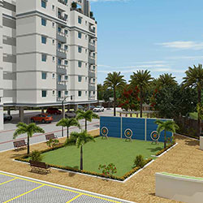

Many people are having a plan to buy their own individual home or an apartment in Chennai, information furnished in general reviews about Amarprakash builders. Since Chennai real estate market is growing steadily, it would be beneficial for people to make their investment in a property here. Buying a flat from prominent builders will bring your dream home in reality. It is given that prominent builders like Amarprakash not only take care to build quality homes but also provide utmost satisfaction by providing luxurious apartments at nominal rates, said the reviews about Amarprakash builders. If you don't know anything about Amarprakash and their quality of service in construction, their price rates, project locations, timely handover, government approval, paper works etc, then read through the reviews given in the website so that you can take a wise decision while planning to make an investment in the real estate market of Chennai city.

Getting information about Amarprakash is not a big job as the builder is well known in the real estate market of Chennai. In spite of this, you can also talk with your friends, colleagues, relatives and well-wishers to get reviews about Amarprakash builders. You would surely be guided in the right path since your friends, relatives and well-wishers would hold huge information about the promoters. Today, with the advent of internet, every individual from nook and corner of the world are able to get information from anywhere with the use of internet, said the reviews about Amarprakash builders. So, with this internet facility, you can also know about this builder and other developers easily by reading through the feedbacks in any of the popular real estate forums and other sites. In spite of this, people who are new to real estate industry will have a list of reputed builders in Chennai, where reviews about Amarprakash builders clearly show that this prominent developer stand top in the builder's list. Since they are very popular in the city’s real estate market, more chances are there for the beginners to know more about Amarprakash Developers. Timely handover, well maintenance of the townships, affordable apartment price, quality of construction, prime location of the property and many more factors made people crazier to go through reviews about Amarprakash builders. This is the main reason for the increase of the builder's reputation among the investors in Chennai's real estate market.The developer is best suited for all income group people when it comes to the factor of budget (i.e. price). In addition to this, reviews about Amarprakash builders also said that they are not the constructor who concentrates only on making a huge profit; they just focuses only on fulfilling the dreams of each and every individual. This is a known fact about Amarprakash by those who have well understood. Do you want to make the best ever investment over the properties in Chennai real estate? Then you have to read reviews about Amarprakash builders thoroughly which provides the complete market price details about Amarprakash, any latest offers provided by the builder, cost charged by the builder, location of Amarprakash projects and lots more factors. It is easy for those who keep track of the constructor to get all latest up-to-date information. Getting latest information by going on reviews about Amarprakash builders would help the individual to make a worthwhile and safe real estate investment.
Different types of housing units are available in their projects. This helps people to choose the best suited apartment type within their budget limit. If you want to describe reviews about Amarprakash builders in simple words, then you can describe them by telling that they are one among the very few who completely analyze the needs of every customers and work hard to bring about the satisfying result in their projects. Details given about Amarprakash is sure to say as the constructor has given more importance to the buyer's needs and demands which can be witnessed in the builder's projects. This gives clear reviews about Amarprakash builders. By knowing this, people can get a fruitful gain through their investment. In addition to this, people can also login the website or visit the real estate forums to check out details about Amarprakash and other real estate constructors. All the information provided in the real estate forums would surely be precise and true, so you don't want to doubt about it.
It is very important for the home buyers to find out reviews about Amarprakash builders for what they are well-known for. The developer has got reputed names for constructing quality homes and also for their timely handover. The real estate experts know their reputation, so they advise the buyers to sign the contract of property documents without making any further verification and clarification about the constructors. Reviews about Amarprakash builders clearly highlighted that today there would be no one in the market who have never came across the work Amarprakash. This shows the builders reputation in the realty market. Most people who are well known about the developer would never ask any of these questions such as documentation, location, price, construction quality, maintenance, handover date etc. This highlights the belief and trust people have on Amarprakash.
You can learn lots and lots information, if you go through reviews about Amarprakash builders in various sites like Google, Yahoo, City search and many other sites. It is easy and simple for individual to get reviews and feedbacks about Amarprakash in these review sites. The sites not only provide reviews that are provided by either real estate experts or professionals, but also provide comments what the previous home buyers have told about the promoters, said reviews about Amarprakash builders. These things about the developer have to be learned by the home buyers ahead of time that means before investing in other builder's property so that the buyer can invest in Amarprakash project and bring value to their money. Apart from this, the new home buyers can also post their comments in reviews about Amarprakash builders in the real estate forums to benefit other property buyers in the similar way, they have got benefitted from. These days, with technological advancement, posting the comments in the forums is also made easier even for elderly people. Mostly, people would be posting positively about the promoters, if any negative comment or blaming words are found in the forum page, it would definitely be the comments posted by the competitors or haters.
The promoter provides homes at affordable price; on the other hand customers said about Amarprakash that they also fulfill the requirements of everyone. The builder is not like other real estate promoters to charge extra amount for the house they buy by adding additional charges for car parking space, documents, maintenance etc, this is a known through Reviews about Amarprakash builders. In detail, many realty builders will provide advertisements in TV and radio like homes at moderate rates in order to get people at the doorstep but they will charge a huge additional penny than the mentioned amount. When people asked about the additional amount, they would state that the cost comes under applied terms and conditions, details said in common reviews about Amarprakash builders. But, in case about Amarprakash, the developer will never break their promise in terms of anything including the price, timely handover etc. Recently, the promoter released an ad stating affordable house for rs.20 lacs. The purchasers came like a thunder and booked their house. As a result, the buyers can save a lot of money by buying an apartment, individual villa or plot as told in reviews about Amarprakash builders and they won't include additional cost what other builders do commonly. The words what they give are not just words, it is more than that and never be taken back. So, it is clear that the developers are the right choice for the investors who decide to purchase a property in Chennai city.
As their reputation is great, the pricing of the apartments may include everything that you want given in the points about Amarprakash. Along with affordable homes, the builder also constructs homes in an excellent gated community environment surrounded with greeneries. So the real estate experts say that people need not look even at reviews about Amarprakash builders and their gated community for knowing any further information they want. This is because their gated community holds a lot of facilities stating about Amarprakash promoters that includes swimming pool, sauna, Jacuzzi, R.O water, proper drainage connection, continuous electricity supply and so on under one roof and also there is no chance for crime rate states reviews about Amarprakash builders. Apart from these world class facilities, they also choose the best prime location in Chennai for the construction of their projects.They provide adequate facilities to save time of the dwellers. If one want to find out where the exact location of project is, they can sign in either the website and check reviews about Amarprakash builders or phone them directly. According to the experts, performing such kind of actions is waste of time as generally they choose prime location to develop their projects. The location they have developed their projects is well equipped with water supply, roads, commercial developments and lots more, told in general reviews about Amarprakash builders. After you have looked at all of these details, you will come to an opinion about Amarprakash. Enjoy all luxurious facilities along with proper commutation facility to all major places of the city as other people who has purchased a home in any one of the Amarprakash projects. Within the city limits, the prices are skyrocketing so people are going for southern parts of the city. So, reviews about Amarprakash builders informed that the builders started concentrating on south region so offer people with houses. In course of time, the land prices in these locations would be rising leading to high returns and it would look as a great investment choice. The demand for these townships will not decrease until the builder provides these valuable facilities for their clients.
From the above mentioned reviews about Amarprakash builders, you would surely get an idea. They provides a lot of housing units including duplex apartment, pent house, 1 BHK home, 3 BHK flat, villa, studio apartment and many more choices in their projects. After knowing completely about Amarprakash, you can decide upon the choice of apartment which you prefer to buy and also that suits your family requirements. This helps you to reside a happier and luxurious living without exceeding your budget. Read the reviews about Amarprakash builders and buy your dream home to feel proud over other neighborhoods who are staying nearby you. The right time has come for people of all income groups to become a landlord for your own property. People who know about Amarprakash will never postpone their decision of buying a home. According to reviews about Amarprakash builders, some local and reputed developers copied and tried to execute the same as in Amarprakash, but they fail to execute it successfully due to certain factors, particularly money where they can’t get huge profit. Why are you still waiting for, when the heaven is waiting for you in the name of Amarprakash. Don't wait for long time, immediately buy your dream home after reading this article providing reviews about Amarprakash builders.
Book a free site visit or talk to our property experts today. Your dream home in Chennai is closer than you think.